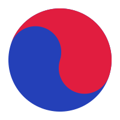
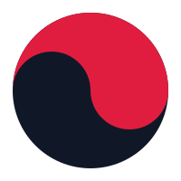
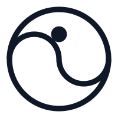

Mijn Poom.Academie
Mijn Poom.Academie
Mijn Poom.Academie
Mijn Poom.Academie

De weg naar de zwarte band — sterk, rustig en zelfverzekerd. Serieus genoeg voor het examen, toegankelijk genoeg om zelfstandig mee te leren.
Een abstract merk uit de Koreaanse vlag: de taegeuk-cirkel (eum & yang) staat voor evenwicht — de kern van taekwondo. Schaalbaar, tijdloos en volwassen; geen mascotte nodig.


Voor het app-icoon staat de taegeuk tussen de vier trigrammen (kwae) van de Koreaanse vlag. Ze passen perfect bij deze app: de kleurbanden die deze kinderen leren heten immers Taegeuk poomsae 1–8, elk verbonden aan een trigram.
Schaaltest — het app-icoon blijft herkenbaar tot navigatiegrootte:


Een compact, rustig palet met twee vlag-kleuren. Rood verwijst naar de poomband en het accent; kobalt is de merkkleur uit de taegeuk. Rood beslaat nooit meer dan ±10% van een pagina.
Ratio's worden live in de pagina berekend. Doel: gewone leestekst blijft altijd donker op licht.
Een atletische stencil-display voor titels — in de stijl van martial-arts-posters — en een rustige, zeer leesbare tekstletter. Krachtig maar volwassen, nooit kinderachtig.
Alle drie gratis, vrij te gebruiken (SIL OFL) en lokaal meegeleverd — werkt ook offline.
De terugkerende elementen uit de leerboeken en de digitale omgeving, in één consistente stijl. Probeer de uitspraakknoppen en de miniquiz.
In Ap Koobi Seogi ligt ±70% van je gewicht op je voorste been. Rug recht, blik vooruit, achterste been gestrekt.
🔊 Gebruikt de Koreaanse stem van je apparaat (Web Speech API).